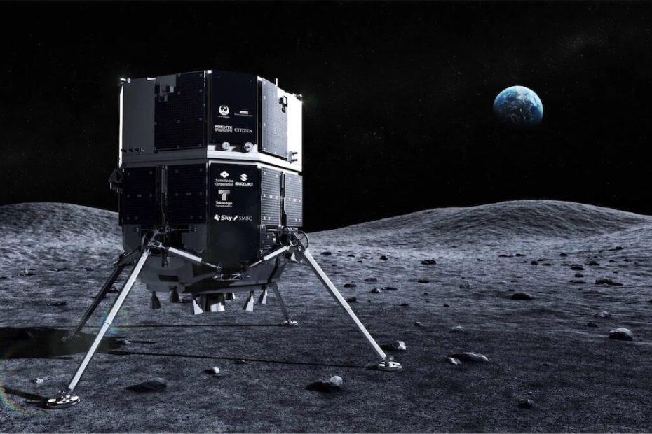

ကမ္ဘာ့ ပထမဆုံး ပုဂ္ဂလိက လဆင်းယာဉ်ဟာ မနေ့က လပေါ် ဆင်းသက်ဖို့ ကျိုးစားစဉ် ကမ္ဘာနဲ့ အဆက်ပြတ် သွားခဲ့တယ်လို့ သိရပါတယ်။
ဒီ လဆင်းယာဉ် စီမံကိန်းကို ဂျပန် နိုင်ငံက ပုဂ္ဂလိက ကုမ္ပဏီ တစ်ခုဖြစ်တဲ့ iSpace နဲ့ အာရပ်ဆော်ဘွားများ ပြည်ထောင်စု (UAE) တို့ရဲ့ ပူးတွဲ ငွေကြေး ပံ့ပိုးမှုနဲ့ တည်ဆောက် လွှတ်တင်ခဲ့တာ ဖြစ်ပါတယ်။
ဒီ လဆင်းယာဉ်ဟာ လပေါ်ကို ညင်သာစွာ ဆင်းသက်မှု (soft landing) ပြုလုပ်ဖို့ ကြိုးစားနေစဉ် အဆက်အသွယ် ပြတ်တောက် သွားခဲ့တာ ဖြစ်ပါတယ်။ မိခင် ကုမ္ပဏီက တာဝန်ရှိ သူတွေကတော့ လဆင်းယာဉ် ပျက်ကျ သွားပြီလို့ ယူဆ နေကြပါတယ်။
အခု ဖြစ်စဉ်ဟာ ၄ လ အကြာ မိုင်ပေါင်း ၂၃၉,၀၀၀ မိုင် ခရီးနှင် အပြီး ထွက်ပေါ်လာတဲ့ အဆုံးသတ် နိဂုံးပဲ ဖြစ်ပါတယ်။
အကယ်လို့သာ ဒီ စီမံကိန်း အောင်မြင်ခဲ့မယ် ဆိုရင် ဒါဟာ လပေါ်ကို ပုဂ္ဂလိက အာကာသယာဉ်တစ်စီး ပထမဆုံး အခြေ ချနိုင်တာ ဖြစ်လာခဲ့မှာ ဖြစ်ပါတယ်။ ဒီ အောင်မြင်မှုဟာ လပေါ်ကို ပုဂ္ဂလိက အဖွဲ့အစည်း တွေ စူးစမ်းမှုအတွက် ပထမဆုံး ခြေလှမ်းလဲ ဖြစ်လာမှာ ဖြစ်ပါတယ်။
“လပေါ်ကို ဆင်းသက်မှု ပြီးဆုံးအောင် ဆောင်ရွက်နိုင်ခဲ့ခြင်း မရှိဘူးလို့ ယူဆရမှာ ဖြစ်ပါတယ်” လို့ iSpace ရဲ့ အမှုဆောင် အရာရှိချုပ် (CEO) ဖြစ်တဲ့ တာကေရှီ ဟာကာမာဒါ (CEO Takeshi Hakamada) က ကုမ္ပဏီရဲ့ live streaming ထုတ်လွှင့်မှု အစီအစဉ်မှု ကြေငြာ သွားခဲ့ပါတယ်။
ဒီ လဆင်းယာဉ်ကို ပြီးခဲ့တဲ့နှစ် ဒီဇင်ဘာ ၁၁ ရက်က အီလွန် မာကခ်စ် ရဲ့ SpaceX Falcon 9 ဒုံးပျံကြီးနဲ့ လွှတ်တင်ခဲ့တာ ဖြစ်ပါတယ်။ Hakuto-R လို့ အမည်ပေး ထားတဲ့ ဒီ လဆင်းယာဉ်ဟာ လရဲ့ Mare Frigoris ဒေသ တောင်ဖက်စွန်းက Atlas Crater ဥက္ကာကျင်းကြီး ထဲကို ဆင်းသက်ဖို့ ကျိုးစားခဲ့တာ ဖြစ်ပါတယ်။
iSpace မြေပြင် အဖွဲ့သားများဟာ အခု မနက် အထိ ဒီ လဆင်းယာဉ်နဲ့ ပြန်လည် အဆက်အသွယ် မရသေးဘူးလို့ သိရပါတယ်။
အခု မစ်ရှင် အောင်မြင်မှု မရသည့်တိုင်အောင် ဒီမစ်ရှင်က ရရှိတဲ့ ဒေတာ အချက်အလက် တွေနဲ့ အတွေ့အကြုံ တွေကို လာမယ့် ၂၀၂၅ အထိ လွှတ်တင်ဖို့ ရည်မှန်းထားတဲ့ နောက်ထပ် လ မစ်ရှင် ၄ ခုမှာ အကျိုးရှိစွာ အသုံးချ သွားနိုင်မှာ ဖြစ်တယ်လို့ ကုမ္ပဏီရဲ့ ထုတ်ပြန်ချက်အရ သိရပါတယ်။
အခု လဆင်းယာဉ် ရိုဗာ ဆင်းသက်မှု အောင်မြင်ခဲ့မယ် ဆိုရင် လရဲ့ နေ့ဖက် သုတေသန တွေကို ၁၄ ရက် တိုင်တိုင် ပြုလုပ် သွားနိုင်မှာ ဖြစ်ပါတယ်။ ဒီ ရိုဗာပေါ်မှာ HD ကင်မရာ နှစ်လုံး၊ မိုက်ကရို စကုပ် တစ်ခုနဲ့ အပူရှာ ကင်မရာ (thermal imaging camera) တွေကိုလဲ တပ်ဆင် ထားတယ်လို့ သိရပါတယ်။
Ref: Japan’s ispace lunar lander appears to have crashed into the moon | Popular Science
ဂျပန် လဆင်းယာဉ် ပျက်ကျ

April 26, 2023
Other Posts
- နေ အကြောင်း သိကောင်းစရာများ
- ကြယ်ဖြူပုကို ပတ်နေတဲ့ ဂြိုလ်ကြီးတစ်လုံး တွေ့ရှိ
- ကမ္ဘာလုံးကြောင်း ဘယ်လို သိနိုင်မလဲ
- ကမ္ဘာဆီ တည့်တည့်ချိန်ရွယ်လာတဲ့ Black Hole ကြီး
- Sukhoi Su-30 ဘက်စုံသုံး တိုက်လေယာဉ်
- နေအဖွဲ့အစည်းရဲ့ နယ်နိမိတ်ကို ရှာဖွေခြင်း
- မေ ၃၁ မှာ မြင်တွေ့ရ နိုင်တဲ့ ကြယ်မိုး
- အာကာသ တွင်းနက်ကြီးတွေရဲ့ အလေးချိန်ကိုတိုင်းမယ့် နည်းလမ်းသစ်
- ရုရှားတို့ရဲ့ ပြဿနာပေါင်း သောင်းခြောက်ထောင်နဲ့ လေယာဉ်တင် သင်္ဘောကြီး
- အလုံပိတ်ထားသော ရှေးအီဂျစ် ခေါင်းတလား ၆ ခုအတွင်းမှ ပစ္စည်းများ ဖော်ထုတ်နိုင်ပြီ